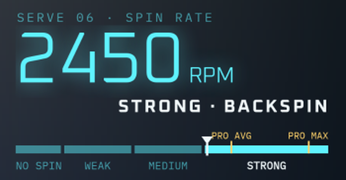

SPIN COACH · 基層桌球訓練站
看得見的發球旋轉，看得見的進步
手機放上三腳架，每秒 240 格高速拍攝；離線運作，資料不上傳。
使用簡單標記過的一般練習球，不需專用器材。

③ 幾秒內說出結果「2450 轉，強，下旋」
轉速、旋轉種類、強弱，並對照世界級平均 2,760 轉。（實際畫面）
示意畫面，學員與數據皆為虛構，用以說明完整版功能；教練端功能開發中。
| 現在 | 使用旋轉教練之後 | |
|---|---|---|
| 學生 | 發球轉得多強，自己看不見 | 每一顆都聽得到數字，練習有目標、看得到進步 |
| 教練 | 靠肉眼與經驗判斷 | 每位學員一週一週的成長曲線，一目了然 |
| 指導 | 全班練同樣的內容 | 從數據看出誰該加強哪一種發球，精準指導 |
| 局處 | 訓練成效難以量化 | 各訓練站的進步，可以用數據呈現與評估 |